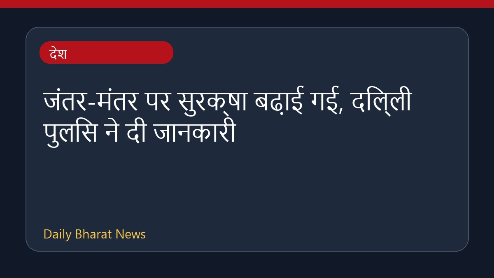

जंतर-मंतर पर सुरक्षा बढ़ाई गई, दिल्ली पुलिस ने दी जानकारी

दिल्ली के जंतर-मंतर पर सीजेपी के नए प्रदर्शन की धमकियों के बाद सुरक्षा व्यवस्था कड़ी कर दी गई है और भारी सुरक्षा बल तैनात है। इस बीच, दिल्ली पुलिस ने जंतर-मंतर के बंद होने की अफवाहों का खंडन करते हुए स्पष्ट किया है कि यह स्थान अभी भी एक सक्रिय स्थल बना हुआ है। पुलिस सीजेपी के 'एआई-सहायता प्राप्त रणनीति' वाले प्रदर्शन की जांच कर रही है और एहतियात के तौर पर जंतर-मंतर के पास बैरिकेड्स लगाए गए हैं। इस मामले में पुलिस स्थिति पर नजर बनाए हुए है।
मूल स्रोत: India News Sources
New CJP Protest? What’s Delhi Police Doing At Jantar Mantar! - gulte.com ↗
New CJP Protest? What’s Delhi Police Doing At Jantar Mantar! - gulte.com ↗